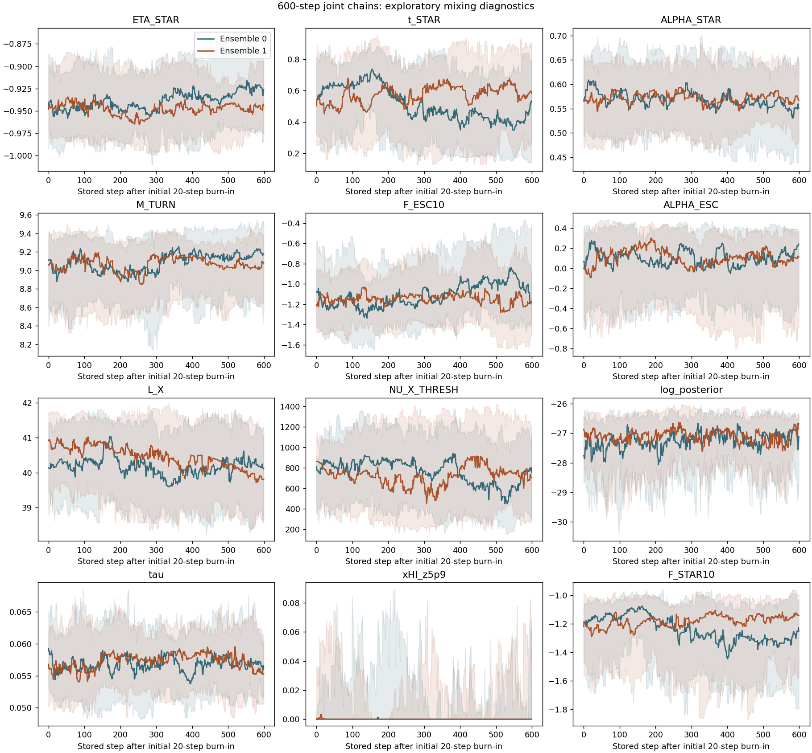

EXACT JOINT / REPAIRED NATIVE / 2026-10-07
New joint results
Completed repaired-native chains only. Old chains and the PL emulator reference remain separate.
MCMC compute pipeline · what the cache reuses ↗
Fixed ms: two completed ensembles
kp = 10 h Mpc⁻¹ · ms = 2.5 · 600 × 32 × 2 · 38,400 correlated rows, not ESS.
LF: median and empirical 16–84% range from 256 selected rows. Tau and neutral hydrogen history: all 12,800 rows. No emulator outputs or old-chain samples pooled.

Free ms: two completed ensembles
200 stored steps × 32 walkers × 2 ensembles; nine sampled parameters, 12,800 correlated rows. Both completed chains are pooled with equal weight per stored row. Convergence has not been established.

600-step convergence assessment
Worst matched-walker rank/folded R̂: 2.30; shortest length/IAT: 7.14. No completely stuck walkers. Mixing and drift gates fail: exploratory samples, not converged constraints. Constant xHI sequences make some autocorrelation diagnostics unavailable; no stored rows were removed.

Download numerical data
Metadata / quantiles / source hashes →Fixed-model samples · CSV →
Free-ms samples · CSV →
Neutral hydrogen history · CSV →
LF / tau / history · JSON →
LF empirical bands · JSON →